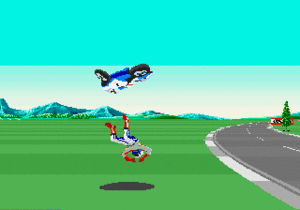

Sega Mega Drive
 De: La Frikipedia, la enciclopedia extremadamente seria.
De: La Frikipedia, la enciclopedia extremadamente seria.
| De la serie Consolas de videojuegos:
|
| Mega Drive
|
|
|
| La Megadráiv y el FIFA 98
|
|
| Nombre
|
Mega Drive
|
| Otros nombres
|
Sega Megadrive, Sega Mega Drive, Mega Drive, Megadrive, Sega Genesis, Genesis, etc.
|
| Compañía creadora
|
SEEE-GAAA!!!
|
| Principales títulos
|
Sonic 1, 2, 3, & Knuckles, Spinball, 3D Blast, y todos los de la saga del erizo azul
|
| Otros usos
|
se utiliza para perder el tiempo, como todas las consolas de videojuegos
|
| Notas
|
se cambia por 3 X-Boxs
|
La Sega MegaDrive, AKA Sega Genesis en Okinawa para que los soldados yankis puedan seguir violando el espacio aéreo de Corea del Norte a las colegialas japonesas.
Historia
Había comenzado la Atari pero Noentiendo le robó las acciones a Nolan Bushnell y por eso se quedó con la franquicia del ítaloamericano destapacaños). Aunque la nueva consola de SEGA no pudo doblar el tejido espaciotiempo, sí pudo doblar otra cosa: la ropa recién planchada las capacidades de la consolador NES de Nientiendo, y fue así que la nueva consola de SEGA superaba al doble a la bazofia de 8 BITs de Nientiendo y por eso los de Sega Enterprises Ltd. le pusieron a su consola de 16 BITs el nombre de Sega Mega Drive, dando a entender que era un aparato de puta madre y de la concha de su madre, pero los
gaijins que corrigieran el nombre (total mientras les hagan ganar buena pasta a quien carajo le importa como mierda se llame).
Obviamente los resentidos degenerados de Nientiendo comenzaron una campaña de difamación basada en calumnias e injurias graves contra Sega, al mejor estilo del aparato de Mobius al que SEGA trajo mediante un Stargate con ayuda del Doctor en Astronomía Joseph "Alien" Hynek (sí sí, el Padre de la Ufología!) para que el erizo punk protagonizara una nueva saga de videojuegos basada en sus aventuras con la que eventualmente le dio duro por el culo y sin vaselina al pajero de Mario (que se masturbaba con su hermano Luigi) y como Sonic violaba analmente a Mario todos los días durante tóda la década del '90 entonces los nintendianos salieron con otras de sus falacias y habladurías amarillistas, acusando que SEGA era el acrónimo de Sociedad de Erizos Gays Azules, obviamente una calumnia muy tergiversada de la típica campaña amarillista de manipulación mediática para que los idiotas no compren los juegos de Sonic y se traguen la polla de los empresarios nintenderos financiados por la CIA.
Pese a la basura mediática corporativa de los mass media financiados por Noentiendo, la consola Sega Genesis tuvo un gran éxito debido a sus 16 Bits y al sonido envolvente, con gráficos y una banda sonora nunca antes vista (difícilmente de encontrar en un juego de Mario del Humphrey Bogart (abuelo de Terry Bogard), cabían mas datos en ellos que en 5 blue ray, gracias a que estaban comprimidos en Zip (o Rar, por eso siempre hay que tener los dos).
Han llegado a salir varios cachivaches para ella, como el Sega 32X o lo que es lo mismo, una mierda nueva clase de periférico que se conectaba en el slot de la consola y le añadía mas bits a la susodicha para que ahora la máquina sea de 32 BITs y pueda correr lefa cartuchos únicos diseñados para éste engendro dispositivo, pero fue un fiasco ya que sacaron menos juegos que palabras dice la Duquesa de Alba.
Ademas sacaron un trasto que capturaba tus movimientos, si tu saltas el personaje salta, si te haces una paja el personaje tambien se la hace, eso si era un trasto y no lo de la güii esa, pero para la época fue toda una novedad (y ya vemos de donde los cerdos resentidos degenerados de Nientiendo han plagiado la idea de la captura de movimiento para sus juegos ¬¬).
Por ultimo, hay que decir que la Mega Drive sigue a dia de hoy compitiendo con las demas consolas en el mercado Asiatico, Americano y en Mordor, donde se ha llegado a vender mas de 5 unidades por troll y 3 por Orcos. Se prevé, incluso, que vaya en aumento, porque los orcos no le encuentran otra utilidad que arrojarla desde la Torre (lavega) Oscura, o de darle de ostias con un palo, grabarlo en vídeo, y colgarlo en Youtube.
Aunque con el fin de la década del 90 se dejó de producir la consola, aún existen cientos de Red Star).
Juegazos
Grandes juegos que pasaron a la historia (de las consolas, no a la de la creación del mundo, que luego uno va preguntando por ahí y se caga la perra):
- erizo flipados producidos por los efectos del LSD hicieron que la saga del erizo marcara un hito en la historia de los videojuegos y por eso se hicieron varias secuelas de éste título, y las veremos a continuación...
- Sonic The Hedgehog 2: Secuela del juego del erizo supersónico, donde ahora el juego viene con mas o menos el doble de niveles, fases, zonas, o como mierda se diga, y además el erizo viene acompañado de un nuevo amigo, un kitsune con dos culos llamado Tails que puede volar revoleando los trastes siempre y cuando lo use el CPU, porque cuando el jugador 2 lo usa con el segundo joystick de la consola ya no puede hacer que el zorrito vuele revoleando el ojete. El juego demostró que aquello de que las segundas partes son malas solo se aplica a las películas de Hollywood, porque en el caso de los videojuegos Sonic 2 tuvo hasta mas escenas de
sexo acción, como volar en un biplano, abordar una base aérea, destruír una cutreparodia de la Estrella de la Muerte, y hasta el erizo Sonic se transforma en Supersaiyajin como Goku!.

- Sonic The Hedgehog 3: La continuación inmediata del Sonic 2: Sonic & Tails vuelven de destruir el Huevón de la Muerte pero un equidna comunista entrenado por el Vietcong le da un Shoryuken a Sonic y le confisca las Esmeraldas Chaos sin las cuales el erizo no puede transformarse en Supersaiyan, así que ahora Sonic y su lacayo Tails deben seguir correteando en otro juego con gráficos mas mejores pero lamentablemente con menos niveles, para recuperar las esmeraldas, darle ostias a Robotnik y a unos robots cabrones que salen al final del primer acto cosa que antes no había, y enfrentarse a Knuckles en unas escenas cutre donde el equidna demuestra que es el Amo y Señor de su isla pero no logra desterrar a los invasores (aunque sí participa en la modalidad de carreritas de 2 Players Versus). Como curiosidad resulta que otra vez Sonic se transforma en Super Sonic con las 7 Esmeraldas del Caos, pero aunque Tails consiga las 7 Esmeraldas del Caos no se transforma un carajo U_U.
- equidna comunista que había debutado
sexualmente en Sonic 3) se une al equipo de Sonic al descubrir que Robotnik es un burgués hijo de puta (hubo que electrocutar al equidna para que se diera cuenta de eso), y desde entonces Knuckles se hace aliado de Norcorea Sonic y reemplaza a Tails en este juego porque el zorrito era muy marica y Knuckles es mas puñetero y puede usar su Ki para volar y trepa muros gracias a su ninjutsu, pero lo mejor es que el cartucho de Sonic & Knuckles fue único en su especie y tenía un slot para conectar con otros juegos, lo que te permitía jugar con Knuckles como prota del Sonic 2 y fusionar Sonic & Knuckles con el Sonic 3 para obtener Sonic 3 & Knuckles y juegar a todas las fases de ambos juegos con cualquiera de los tres mosqueteros personajes (aunque a Tails & Knuckles los cagaron que no los dejaron transformarse en Supersaiyajines como corresponde U_U).
- pinball de cuatro niveles que usaba a Sonic como si fuera la bola, las esmeraldas eran todas azules, no te transformabas en Super Sonic, no podías jugar con Tails (y Knuckles todavía ni existía), los personajes del reparto eran los de las series y comics americanos, y el juego en general deja mucho que desear pero todos lo compraban nomás porque eran fanáticos del erizo azul y querían tener cualquier cosa que fuera de él (hasta sus condones usados).

- Sonic 3D Blast: El último título de Sonic para Sega Genesis, y también el primer título de Sonic en 3D. También fue hecho por los yonkis, o mas precisamente sus esclavos británicos, y por eso por mas mejor que le hicieron los gráficos tridimensionales prerrenderizados en un plano isométrico igual la cagaron con la jugabilidad por haber hecho un Sonic mas lenteja que ni se transforma en Supersaiyan y tiene a Tails & Knuckles solo de adorno pero el objetivo del juego es juntar unos pájaros frikis y meterlos por el agujero
del culo de un anillo gigante. En este juego Sonic no corre tan rápido, no se transforma en Super Sonic por mas esmeraldas que cogiera, no puedes elegir ni a Tails ni a Knuckles como personajes jugables, no hay fases bajo el agua, ni en bases aéreas en el cielo, ni en el Death Egg, ni en el espacio exterior, ni viajes en el tiempo, ni pusieron a Metal Sonic, Nack The Weasel y Amy Rose por primera vez en la Sega Genesis como deberían haber hecho, pero todos los fanboys compraron el juego porque... ¡es en 3D! ^^.
- Flicky: Juego de Piolín en versión azul que tienes que salvar a los pollitos de las garras de un gato y de una iguana (¿una iguana come pollitos?). Es un juego sin sentido, ya que, por más veces que liberes a los pollitos, más te aparecen a lo largo del juego, haciendo que te sofoques y que tires la Mega Drive por la ventana para comprarte otra. Este juego llevo a Sega a ser una empresa rica, tanto que como vemos el pajero Friki fue el mismo que introdujeron
por el culo en la saga de Sonic como el principal de los amigos animales que el erizo rescata del interior de los robots de Robotnik, y de hecho la juganilidad de coger a tu hermana pajarracos fue copypasteada del Flicky para crear el juego Sonic 3D: Flickies' Island anteriormente mencionado, donde el pajillero pajarillo azul vuelve a tomar protagonismo y demostrar que no sirve como personaje de continuidad por mucho que Sega insista en seguir intentándolo.

El
Dr. Robotnik cagando a pedos sermoneando a sus lacayos Scratch & Grounder junto a la máquina de tostar maní.
- Dr. Robotnik's Mean Bean Machine: El juego protagonizado por el fans hubieran esperado, sino que lejos de eso no solo Robotnik sigue siendo el malo de la película (o debería decir del videojuego ¬¬) sino que lo peor es que ni siquiera se trata de un juego de plataformas, o acción/aventura, o un shooter, ni nada que sea divertido. La verdad es que Dr. Robotnik's Mean Bean Machine es un juego de
mierda puzzle al mejor estilo rompecabezas, no al genio psicótico de la saga Puyo Puyo, que es otro juego de Sega Megadrive que los de SEGA crearon para que sea "la versión japonesa del Mobius (típica judías y las convierte en peligrosos robots con un aparato llamado "Mean Bean-Steaming Machine". El jugador debe luchar contra el Adventures of Sonic The Hedgehog, por lo que es obvio que el juego es una cagada porque los gringos que lo hicieron no tenían interés de hacer un buen spin-off de la saga del erizo y solo lanzaron este adefesio para promocionar los guisantes dibujitos con los que nos adoctrinaron de niños durante la década del 90.
- Dynamite Headdy: Toy Story que escapa de las garras de una marioneta diabolica (posiblemente Chucky). Tu 'micción' en éste juego será hacer de exorcista y acabar con él para que no siga haciendo peliculas de terror. Este juguete tiene la ventaja de
ereccionar la polla alargar el cuello y darle con el glande la cabeza a sus enemigos, además de que tiene una serie de 24 cabezas intercambiables, con una jugabilidad mitad Sonic mitad Kirby. El Cabezón Dinamita fue diseñado como personaje de continuidad de SEGA como para lanzar mas franquicias además de la de Sonic, pero como vemos no fue lo suficientemente bueno como para que haya Headdy 3 (o al menos Headdy Chaos para Game Gear), y de hecho éste fue el único título de su franquicia (lo que se dice debut y despedida U_U).

Ecco es el personaje mas
"rarito" de SEGA
- Ecco The Dolphin: Otro personaje de continuidad de SEGA, que aunque parezca mentira éste sí tuvo mas secuelas en su saga (como dos mas o menos). Ecco es un ecolocación que de hecho tienen todos los delfines de la vida real; ¡Qué imaginación tienen estos de Sega!.
- Kid Chameleon: El pendejo camaleón es el niño cani más peligroso del barrio que, cuando se enteró de que habían puesto
un puticlub una tienda de Arcades recreativos al lao de su casa, se fue a gastar el dinerito que chingó a los niños de su barrio. Más tarde, se dio cuenta de que era una trampa preparada por todos los habitantes de ese barrio (tooooooma venganza). Ahora, con ayuda de unos patéticos disfraces, tendras que robar joyas del suelo y salir del mundo imaginario que han creado los habitantes, para seguir siendo el terror del barrio. Otro juego muy educativo, considerado como "el Mario de Sega" porque por esas casualidades de la vida Kid Chameleon debe cabecear cubos para obtener los cosplays de los personajes de videojuegos ficticios que les da poderes para pasar su propio juego. Lamentablemente los lammers de Sega no hicieron la versión de Dreamcast de éste juego, que hubiera sido un éxito verlo en 3D y parodiando personajes de otros videojuegos de verdad, pero como los empresarios que manejan Sega son unos idiotas se perdieron la oportunidad de hacer de éste título una franquicia reedituable.
- Ristar: Otra franquicia
fracasada "exitosa" de Sega. Ristar es una Estrella Socialista, un hijo de puta un gran héroe universal que tiene que salvar el universo de la destrucción provocada por unos seres oscuros procedentes de una maligna secta alienígena. Aquí tienes la habilidad de ereccionar la polla alargar los brazos para agarrar a los enemigos y enviarlos a tomar por culo.
- Golden Axe: "Desodorante Axe edición especial oro" es otra exitosa saga de Sega (jeje, saga de Sega^^) donde tienes que elegir entre un tipo a lo Amazona a lo Goliat de armas tomar y un hombre pantera, o asi es como lo llamaba su mujer (tambien asesinada por el rey ese) en sus momentos intimos. Esta saga fue exitosísima hasta que acabó la década del 90. Luego trataron de revivirla en las nuevas consolas de 128 BITs pero los de Sega son unos tarados y no siguieron haciendo nuevas secuelas del juego.
- Streets of Rage: Existosa saga de esos Beat'em Up donde vas caminando lo mas tranquilo por callejones en los suburbios y en derrepente unos Gravure Idol (generalmente Suzuka Neiro & Shinobu Mitsuki) y por eso censuraron el juego, le cambiaron el título, y no volvieron a salir Beat'em Ups para las consolas con gráficos en 3D U_U.

Causó furor en los fichines y entre los
cosplayers por igual.
- Street Fighter II: Éste título no necesita presentaciones. Se trata del juego de luchas por excelencia que abrió el género que perdura hasta nuestros días, y también le abrió la quijada a todos los CAPCOM decidieron lanzar la secuela ahora con nuevos personajes y que además puedas elegir a los demás luchadores en vez de a solo Ryu & Ken como ocurría en el juego anterior. Obviamente el juego volvió a tener éxito en los arcades y de hecho fue aún mas exitoso que su predecesor, al punto tal de que hechó por tierra totalmente al primer Street Fighter incluso al extremo de que ya nadie se acuerda de como era el "Street Fighter 1" ni de cuales eran sus luchadores, ya que si mencionas la sola palabra "Street Fighter" (bueno, son dos palabras ¬¬) a todos le viene a la mente los personajes, niveles, y las musiquillas de las fases del Street Fighter 2. Debido a la fama del juego los de Sega supieron capitalizar éso adquiriendo las licencias de Capbron para lanzar la versión hogareña del juego, y a partir de ahí tuvimos toda una década del '90 repleta de tropocientas versiones distintas del mismo Street Fighter 2: así es, los listillos de Capbron nos hicieron comprar el mismo juego cientoochentamil veces, porque en vez de lanzar secuelas tipo "Street Fighter 3", "Street Fighter 4", "Street Fighter 5", en cambio lanzaron puros remakes del mismo Street Fighter 2 pero titulados como "Street Fighter 2 Turbo", "Street Fighter 2: Special Champion Edition" o "Super Street Fighter 2", que todos son exactamente la misma mierda con la única excepción que el Super Street Fighter II tiene una barra de Akuma, pero los otros 12 son los mismos y todo el juego es igual salvo algún que otro escenario y/o musiquilla, pero lanzaron tropocientas versiones de Street Fighter 2 y hasta una patética película clase-B protagonizada por Street Fighter Alpha), y recién en la era del Street Fighter III que desilusionó a todos paradójicamente por tener nuevos personajes y un argumento nuevo, y por eso el Street Fighter IV por mas que se llama así vuelve a repetir los personajes de Street Fighter II pero en 3D para aprovechar los gráficos de las consolas de nueva generación.

Mortal Kombat en versión SEGA
- tripas. El juego tiene la misma mecánica de Street Fighter y de todos los juegos de lucha que lo Shao Khan les dice: FINISHIM/HER!, que esas fueron principalmente las controvertidas Goro (que podía pajearse a 4 manos, literalmente) en Mortal Kombat 2 peleabas contra Kintaro (que también se rascaba las bolas a 4 manos), y en Mortal Kombat 3 peleabas contra Motaro (que era un Ultimate Mortal Kombat 3, que es igual al MK3 pero sin Sheeva (la tipa de 4 brazos que te imaginas las cosas que puede hacer con cuatro manos...) y en reemplazo puedes desbloquear a Human Smoke, que es el mismo Smoke que solo en UMK3 viene por defecto pero el que usas habitualmente es un droide como Sektor & Cyrax mientras que la versión desbloqueable de Smoke es un Scorpion solo que con olor a sobaco. La saga fue tan exitosa que hasta fue la primer franquicia de videojuegos en tener su versión para la pantalla grande (sí, incluso antes que Street Fighter, pese a que SF salió antes que MK): hicieron dos Robin Shou, donde con la primera creímos que Robin Shou saltaría a la fama y sería su catapulta al estrellato, pero con la secuela le cagaron el sueño y hundieron su carrera en un pozo sin fondo peor que el de las Stages Fatalities de las fases "The Pit" de éstos mismos juegos (y por eso Robin Shou no alcanzó la cima como Jackie Chan pese a que por su talento se lo merece U_U).
- Virtua Fighter 2: Secuela del exitosísimo Arcade de SEGA Virtua Fighter, que fue una cutreparodia de Akira Yuki, un japo que practica Hakyoku Ken (versión nippona del Ba-Ji-Quan chino), que es claramente un PLAGIO de Ryu de Street Fighter (sin eufemismos). También está Jacky Bryant que es un plagio de Ken Masters solo que es un corredor de incesto (si ves a su Pai Chan, plagio de Chun Li e hija de Lau Chan, interpretado por ginoide llamada DURAL, que es un personaje secreto que lo consigues si le das todo el rato a la derecha en la pantalla de personajes (ups, eso era un secreto^^).
- Vectorman: Una malvada secta alienígena (jo, otra secta. Estos aliens son peligrosos) pretende dejar el mundo en ruinas. Y solo un cutre robot de limpieza podra
limpiar acabar con ellos. Aquí puedes usar tu fregona disparar a tus enemigos y convertirte en un kit de limpieza en muchas cosas: un helicóptero, un vagón, un robot-patinete, etc. Y como siempre, otro juego con 'duología'. En la 2 tienes que exterminar a una araña gigante más peligrosa que el Spiderman ese.
- Columns: Gollums es un clásico de Sega. Una cutreparodia del Tetris. Ahora vas en plan Homero o Virgilio y tienes que juntar trozos de muralla romana o griega (joder, pero si son iguales) para hacerlas desaparecer. ¿Que para qué sirve?, para conseguir puntos y obtener un record. ¿Y cuando lo haya obtenido qué hago con el juego?, pues lo tiras a la basura, hijo. Y a mí qué me cuentas.
- Comix Zone: Zona del Comic XXX es otro clásico de Sega: Ahora estás en el papel de un joven Ibañez (creador de Tirania) y hace que el Trinity la de Matrix. Tu 'micción' es rescatarla, salir del comic y
follartela casarte con ella.
- retrete interdimensional donde toda la conserje estornuda sobre el aparato causando un desperfecto que abre el portal hacia la otra dimensión de donde sale una trono (y lo del "trono" aquí si vale como sinónimo de excusado).
- Steven Seagal is The Final Option: Steven Seagal es La Opción Final fue otro de los gloriosos títulos del género de los Beat'em Up para la todopoderosa consola Sega Genesis que desgraciadamente nunca salió a la luz. Como vemos el videojuego iba a estar protagonizado por el famoso Maestro de actor de screenshots mostraban que la cosa prometía, pero lamentablemente tuvieron que cancelarlo por dos motivos: el juego estaba lleno de bugs que los lammers no supieron depurar y Steven Seagal no acabó de rodar las escenas del juego porque se fue a esconder de Jean-Claude Van Damme para que no lo cagara a trompadas por haberlo desafiado al Kombate Mortal (al parecer "La Opción Final" que eligió Steven Seagal fue esconderse para que no se la rajen de a patá en los cojones ¬¬).

Como no encontramos el Screenshot del Moonwalker pusimos esta foto de archivo de Jacko jugando al Sonic 2
- Michael Jackson's Moonwalker: (マイケル ジャクソンズ ムーンウォーカー Maikeru Jakusonzu Mūnwōkā) es el juego protagonizado por Harlem no les gusta que los blanquitos se metan en sus pagos así que ni bien lo vieron a Jacko lo confundieron con algún blanquete del Bronx y darle Thriller pero bien trajeados a lo Billie Jean. ¿Y el argumento del juego de que va?, ¡Ah, sí!, trata sobre que Michael Jackson debe rescatar a todos los niños que fueron secuestrados por Mr. Big (sí, el mismo Sex and the City), o sea, aquí como vemos quisieron limpiar la imagen de Jacko haciendo creer que Mr. Big es el que secuestró a los niños para Sarah Jessica Parker, en cambio luego resultó que era el propio Jacko el que popper y acabó estirando la pata.

Dragon Ball Z en versión SEGA
- Dragon Ball Z: Bu Yu Retsuden: Bola de Dragón Z: El LLamado del Destino es el único juego de Akira Toriyama. El estilo de juego es diferente al de los otros juegos de lucha, ya que en vez de combatir en peleas divididas en rounds donde generalmente se pelea al mejor de tres rounds, aquí la cosa es mas bien como en una pelea de la la delgada línea roja como la que la ONU impuso para dividir la frontera entre Corea del Norte & Corea del Sur en el paralelo 38º, dejando a tu contrincante tras las líneas enemigas teniendo ángulos de dos cámaras diferentes para que ambos personajes puedan verse en sus respectivas secciones de la pantalla, cosa indispensable ya que los ataques mas poderosos solo pueden hacerse con la pantalla dividida al medio. Por lo demás el juego tiene lo ya conocido por los fans: las fases son escenarios habituales de la serie, como el planeta Namek o el Torneo de Artes Marciales Tenkaichi Budokai, y los personajes son Goku, Gohan, Vegeta, Trunks, Krilin, Freezer, Cell, Pikoro, #18, Rikūm, y Ginyū, que como vemos pusieron 11 personajes y lo habitual en un juego de lucha son 12, así que podrían haber puesto a Yamcha, y en vez de Rikum & Ginyu hubieran puesto a Ten Shin Han y Raditz, porque total el argumento del juego no incluye la cuarta temporada de la saga de Majin Boo así que éste gordo estúpido no iba a aparecer de todas formas.
- Dragon: The Bruce Lee Story: El videojuego basado en la Jeet Kune Do, que por mucho que nos digan que "el Jeet Kune Do no es un estilo porque Bruce Lee no creía en estilos y las artes marciales en su totalidad deben aprenderse en una forma sin-forma" aún así todos los demás artemarcialistas de la actualidad se han cagado en las enseñanzas de
Lao-Tse Bruce Lee y siguen diciendo que el Jeet Kune Do es un estilo y por mucho que digan que "Jeet Kune Do es solo un nombre para transitar el camino pero lo importante es recorrer el camino mas allá del nombre" aún así a NADIE le dan el cinto negro de Maestro del Jeet Kune Do, y joder que si tanto es una "no-forma" sin estilo entonces cualquiera podría convertirse en maestro del Jeet Kune Do sin aprender de otro maestro de Jeet Kune Do pero en ésa te cagan en que si no estudiaste con uno de los maestros de Jeet Kune Do certificados por Bruce Lee (que son contados con los dedos de una mano) entonces nunca te aceptan como que tú hayas aprendido Jeet Kune Do o sea que al final sí tiene el mismo estrato de linaje de los demás estilos de artes marciales. En fin, la idea es esa, Bruce Lee dando tarados que hicieron el filme pusieron al "taoístas deben luchar) y por eso el guerrero de terracota simil samurai invasor imperialista asesino de chinos y coreanos, presuntamente interpretado por Takeshi Kitano.
Blizzard, del Primal Rage.
- Primal Rage: Furia Primitiva es otro rememorable juego de la concha de su madre que originalmente salió para Arcade y SEGA lo lanzó en versión doméstica para su Megadráiv. Se trata de otro plagio de Mortal Kombat, solo que los luchadores son King Kong VS Godzilla entonces ya te puedes dar una idea de que va el juego. El storyline trata de que un meteorito impactó contra la cavernícolas vestidos con taparrabos que le rinden culto a sus dioses, y convenientemente la Armadon, Talon, y Las Bestias Destructivas son Vertigo, así que como vemos al final los malos obviamente son malos pero los buenos también son malos, porque al igual que en Alien VS Predator, gane quien gane, nosotros perderemos. La mecánica es la de un juego de lucha típico solo que con éstas cutreparodias de monstruos de GamePro señaló que Primal Rage era claramente un plagio de Mortal Kombat (mezclado con King Kong VS Godzilla), y por eso la saga llegó a su fin (otra en la que Sega podría haber metido mano para hacerse con otra continuidad pero se cagaron ¬¬).
- Bonanza Bros. Los hermanitos que vienen de Bonaaaaanzaaaa!, (Ojo, no es un juego de Chiquito de la Calzada): Ahora eres uno de los hermanos mas malotes del país cuyo objetivo será chingar cosas delante de la policia. Un juego educativo para niños.
- Gain Ground: Ahora eres tres guerreros a la vez cuyo objetivo es rescatar a otros guerreros para rematar la faena y acabar con los enemigos (o salir por piernas hacia la meta). Cutreparodia del Señor de los Anillos, con sus tres guerreros y too.
- Gunstar Heroes: Héroes de la Estrella Gun es un título donde eres un chico que tiene que liberar a su hermano gemelo de un dictador peor que el mismisimo Hitler, ademas de evitar que libere una cosa llamada 'el destructor de platas y oros' (Golden Silver the destructor), que destruye el oro y la plata de los archimillonarios como yo.
- Shining Force: La fuerza brillante de tus axilas va de que eres un guerrero de la luz llamado Lamparito que tienes que salvar tu pueblo de una oscuridad oculta desde tiempos de Maricastañas. Tendras que usar linternas, focos, lámparas y rayos laser para ilumin...digoooo, para derrotar a tus enemigos oscuros.
- Super Thunder Blade: En el helicóptero de papá, nos iremos a pasear: Eres un terrorista que robas el helicoptero de la bofia y te vas a armarla por hay con él. Tu 'micción' será destuir las fuerzas armadas y convertirte en el fucking boss del mundo. Otro juego educativo y divertido.
 Super Hang-on, momento de choque impactante del motorista
- Super Hang-On: Super Colgados es otro clásico de Sega antaño salido para Arcade y ahora relanzado para el Genesis, donde interpretas a un Vallentino Rossi de pacotilla que se va a dar de ostias por todo el mundo. Tu objetivo será llegar a la meta que está en el quinto pino. Lo que más divierte del juego son los piñazos que te puedes pegar contra las pancartas, señales y arboles de los circuitos. A veces, si el choque es fuerte, tu motorista puede salir volando. ¿A que mola?.
- Super Mónaco GP: Trufas trufurious trucircuit - A toa pastilla por el circuito. Si en el de las motos eras un Vallentino Rossi, en este eres una estupida copia de Fernando Alonso. Lo unico que tienes que hacer es GANAR, GANAR, GANAR. Cuando llegues a una parte del circuito, se oye unos pitidos y alguien diciendo: KI-KA-KU-UP. Seguramente estaría haciendo gárgaras u otra cosa guarra.
- Toe Jam & Earl: Dos Andrómeda cuando colisionan con un meteorito y caen al planeta Tierra (qué casualidad). Tu 'micción' será encontrar partes de tu cutrenave para volver a casa por Navidad. Tiene una 'duología' . En la 2, al recoger las piezas de su nave, se metieron unos cuantos humanos canis en ella, pensando que era la disco y, cuando la nave llegó a al planeta Fu
cknkotron, se bajaron y convirtieron el planeta en un caos. Tu segunda 'micción' será encontrar vasijas para meterlos dentro y enviarlos a tomar por culo de vuelta al planeta Tierra.
- World Cup Italia 90: 'Fofo' mundial de fútbol, el juego de Eto'o, Raul, Sergio Ramos y otros jugadores famosos, pero daría igual, ya que los jugadores son iguales elijas el que elijas, visto desde arriba es un caos de figuras las cuales tenemos que interpretar que son personas, ya que solo son manchas de distinto color, los unicos personajes diferentes eran los porteros, que eran más
gordos corpulentos. Sabemos que se trataban de personas ya que cada vez que marcaba alguien un gol salía una imagen de un jugador corriendo con una camiseta pintada del color de su respectivo equipo mientras la grada enloquecía y un japonés tomaba una foto... siempre, siempre la misma imagen, siempre el mismo japonés. consejo: el mejor equipo del juego es Brasil. Jamas elijas a China porque son los mas malos.
- Robocop VS Terminator: En este juegazo manejas al mismísimo defensor de Detroit City para que acabe con cuantos más Terminators mejor. Aquí los fans de Terminator se tenían que joder, pues tan solo podías encarnar a Robocop (porque el de hojalata era el bueno, y los robotejos musculosos con piel artificial eran los malos). El tema central del juego era rollo avanzar, disparar, avanzar disparar, avanzar, disparar, sin más ¡O qué te esperabas, con estas malas bestias de protagonistas!. Se caracterizaba por ser chunguísimo (¡Robocop moría a la más mínima, que blasfemia!); villanos supersangrantes (todos aquellos a los que Robocop se cargaba soltaban 40 litros de sangre); tener a un mogollón de bosses de final de pantalla que no conocía ni su padre, o que se los habían sacado de la manga para el videojuego unicamente (salvo el de la tercera, que era el malo de Robocop 2); o por su última y megachorradescomunalincrediblesuperchunguísimisimisimisidificilísima última pantalla (que dudo mucho que nadie pudiera llegar a pasarse sin utilizar el truco de guardar partida en el emulador de Sega). En resumen, un título inolvidable.
Ya quisieras que Megaman fuera así...

Así de realistas eran los juegos de Sega Genesis...
- Battletoads: Battle Toads es un bonito juego arcade 50% plataformas y 50% Beat'em Up donde tú y un amigo pueden jugar interpretando a unos sapos puñeteros que entran a repartir sopapos en un mundo frikado simil planeta Mobius repleto de otros animalejos piojosos y algún que otro vampiresa pero definitivamente es el tipo de súcubo que tiene como 5.000 años pero por alguna clase de vedetonga de 40 al mejor estilo Dita Von Teese, pero antes de que te den ganas de convertirte en harpía es muy pero muy mala y por eso es la supervillana del juego (aunque no le llega ni a los talones a joystick del Player 2 (y no digo Game Genie para introducir códigos para jugar en los otros niveles (cada vez mas difíciles) hasta incluso llendo directo al jefe final que es la tipeja esa que tiene una pinta de putarraca impresionante y te la
cascas raja en dos minutos (algunos dicen que ésta suripanta es la novia de Robotnik, pero SEGA nunca lo confirmó, y debe ser falso porque Robotnik es virgen).
El guaperas de azul y el rubiales de rojo fueron famosillos en los
90 hasta que cayeron en bancarrota por farrearse la poca "pasta" que les quedaba.
- Double Dragon: Doble Dragón es otro clásico de arcade de SEGA que hasta ha tenido su propia serie animada y juguetes de figuras de acción coleccionables que durante los años '90 hasta le llegó a dar duro y por el culo sin vaselina a esos gemelos llamados Billy Lee & Jimmy Lee, que como vemos son otro par de hijos extramatrimoniales de Kato en la serie The Green Hornet. El asunto es que Bruce Lee le transmitió sus poderes por Chinatown, y a la vuelta de la esquina había otro taoísta de Lao-Tse prefieren matarse entre ellos para "eliminar a la competencia" típico de la religión capitalista occidental que le rinde culto al Dios Dinero y por eso ambas escuelas se la surten a bofetadas para masacrarse unos a otros para que solo quede uno en pie y pueda ser el único propietario del negocio en el Chinatown de San Francisco.
- Battletoads & Double Dragon: Y como viene la cosa hicieron éste juego que sirve como secuela conjunta de los dos anteriores, donde la jugabilidad sigue siendo de lucha callejera como para no perder la costumbre de andar repartiendo sopapos a los pendejos drogadizados de los barrios bajos, pero ahora puedes elegir a los sapos puñeteros y a los gringos que se creen chinos porque están los cuatro juntos en el mismo juego. La historia poco importa porque total es una excusa para meter a los cuatro gatos locos en la misma bolsa (que ninguno son gatos, son dos sapos y dos dragones, pero bueno, es una forma de decir), y como vemos el argumento de una franquicia poco y nada tenía que ver con el argumento de la otra franquicia pero a SEGA le importó un reverendo carajo porque total la jugabilidad es la misma mierda de deambular a las dos de la mañana rajándole la cara a los pelotudos que les gusta salir a joder a esa hora, que convengamos que la gente decente y trabajadora y los intelectuales iluminados en ésas horas de la noche están durmiendo para levantarse mañana temprano a las 6 de la mañana para ir a trabajar y a hacer algo útil por la humanidad, cosa que los alcoholizados y endrogados pendejos fiesteros que salen a mear tachos de basura a la madrugada no hacen una mierda y no viven una vida útil y por eso tienes que elegir a las ranas anabolizadas o a los guaperas brothers para ir a cagarlos a trompadas a todos esos vagos hijos de puta que no tienen nada en la cabeza y no saben nada de la vida porque son unos pendejos de veintipico de años con una mentalidad inmadura de un niñato de 15 años. En fin, como vemos otro juego fielmente inspirado en los hechos de la vida real.
Y bueno, es que este juego ya tenía muchos años...
- Pac-Mania & Ms. Pac-Man: Otro de esos juegos 2 en 1 donde puedes comprar dos juegos al precio de uno solo porque vienen compilados en el mismo cartucho. Aquí tenemos al famoso Ms. Pac-Man, que fue el Pac-Mania, que fue el último título del todopoderoso Pacman en salir para Arcade y tiene la novedad en ser el primer Pacman en 3D, aunque claro que por aquellos tiempos el 3D era solo 2D en un plano isométrico, pero al menos por fin Pacman puede deambular por laberintos únicos con escenografías diferentes muy coloridas en vez de estar atascado siempre en el mismo laberinto de fondo negro como ocurría antaño, y como el plano isométrico le proporciona a Pacman una jugabilidad en 3D ahora también puede saltar para pasarle por arriba a los fantasmas cabrones que se lo quieren
coger comer, aunque algunos fantasmas son mas cabrones todavía y aprendieron el truco de saltar cuando Pacman salta para interceptarlo en el aire y joderlo. Cabe señalar que originalmente estos dos juegos se vendían por separado cada uno en sus respectivos cartuchos, pero como siempre los hackers chinos y los piratas norcoreanos plagiaron los juegos y lanzaron el cartucho con éste compilado 2 en 1 que fue diseminado a mansalva hasta el punto que solo se consigue éste y no los cartuchos originales.
Como nadie subió una imagen de Earthworm Jim pusimos lo mas parecido que encontramos...
- Earthworm Jim: Otro de los títulos mas famosos de Sega Genesis. Se trata de otro juego lleno de colorinche y altas dosis de lombriz, solo que no le pusieron Jim The Earthworm porque se notaría a la legua que copypasteaban el formato de Sonic así que para diferenciarse en vez de elegir a un adorable mamífero eligieron a un plasma incluída le pertenecía a un psíquicos así que no sabemos por que le pusieron ese nombre) y desde entonces Psy-Crow persigue a Jim para confiscarle su uniforme, por lo que Jim debe huir del basurero inmundo donde vive en las afueras de tripas, un planeta donde hay Dr. Jekyll y Mr. Hyde, y todo en una travesía donde debe usar su plasma para acribillar bichejos de todo tipo y viajar por el ésa reina ¬¬) y se enamora de su hija, que aunque es una alienígena de la tipología de los insectoides aún así está buena (aunque no necesita estarlo, al cabo que total Jim también es un bicho), y la princesa no-se-como-carajo-se-llama lo pone duro a Jim pero al final él no se la puede coger porque la vaca que había revoleado por el aire en el primer nivel le cae en la cabeza en el último nivel y lo deja cuadripléjico y por eso la tía buena se le escapa y se la va a chupar a otros extraterrestres mas machotes (como Gou Knuckles y el Predator).
- Earthworm Jim 2: Secuela del juego anteriormente mencionado donde al parecer Jim se recuperó del síndrome de
Down aplastamiento que sufrió cuando la princesa no-se-como-carajo-se-llama para tratar de tirársela y así perder la virginidad de una vez por todas. El juego vuelve a tener fases extremadamente psicotrópicas a causa de los efectos del David Perry (el salamandra que debe bucear bajo el tango, pero la fase final es una carrera contra el Psy-Crow donde Jim debe llegar primero para rescatar a la princesa como carajo se llame antes de que Psy-Crow llegue primero para Earthworm Jim 3D para PC, pero aunque Shiny desechó al personaje los idiotas de Sega no aprovecharon la oportunidad para comprar la franquicia y seguir la continuidad de Jim en nuevos títulos para las nuevas consolas, y por eso los de Sega perdieron otro de sus éxitos cosa que Noentiendo no hizo y le compró Mario a Shigeru Miyamoto con el que siguen currando hasta el día de hoy.
- Cool Spot: Un título inolvidable de Sega Genesis donde 7UP puso dinero para que le hagan un juego para hacer volleyball y aunque no hay chicas en gemelos con los que planea formar un '70, y otras con Beach Boys). Aunque los niveles tienen onda pronto te das cuenta que al pasar la mitad del juego los niveles empiezan a repetirse y resulta en un punto flojo de éste título que todas las fases finales son solo la versión dificil de las fases iniciales, y otro punto flojo es que el juego no tiene jefes, así es, el desafío está en la dificultad de los niveles y los enemigos de turno que aparecen, pero al llegar al final de cada nivel solo liberas al Spot que está en la jaula y pasas sin haber peleado contra ningún maloso mas puñetero, y por eso éste es prácticamente el único juego que puedes acabarlo sin que en el último nivel tengas que luchar contra un jefe final.
- Spot Goes To Hollywood: Secuela del juego anterior, que ahora intentaron hacerla en Frankie goes to Hollywood en reemplazo de Jacobim Mugatu que había abandonado el grupo para diseñar su corbata-Tron, anorexia por haber dejado de comer por su adicción a las drogas, así que ya no hubo juegos de Spot salvo una versión mas nueva para Playstation pero es una lástima que los imbéciles de SEGA hayan desaprovechado la oportunidad para hacerse
una paja con el control de la franquicia de Spot y lanzar nuevos juegos para consolas de nueva generación con Spot parodiando películas mas recientes como Matrix, Transformers, Avatar, y de esas que hacían las delicias de los nerds y pendeviejos solitarios que solo sirven para jugar a los videojuegos.
Aunque no lo parezca es un androide muy poderoso que da patadas sacachispas ¬¬
- Socket: Otro juego de continuidad de SEGA que solo tuvo un único título en toda su fanquicia (ya vemos que bien que le fue). Se trata de otro cliché del personajillo animalillo basado en Sonic, solo que ésta vez fue un
Vic Tokai que es la que se encarga de suministrar energía eléctrica para ser derrochada en Akihabara y en los Ainues y los Burakus que viven en la pobreza no tienen luz, ni gas, ni para comer. La cosa va de que éstos tipejos de Vic Tokai quisieron probar suerte introduciéndose un palo en el culo en la industria de los videojuegos y por eso copypastearon la fórmula de Sonic de usar un animalillo simpático pero heroico como mascota de la empresa y ponerlo a protagonizar su propio juego de plataformas, y el colmo es que lanzaron el juego para la propia consola de SEGA! (que total Sega sabía que era obvio que éste pato de mierda no iba a triunfar ni de puta casualidad ¬¬). La trama gira en torno a Socket, que como vemos es un androide con forma de pato con nombre de enchufe y de hecho su cola es un cable con un enchufe para conectar al tomacorriente de la pared para derrochar estúpidos y por eso hasta el día de hoy en híbrido entre extraterrestre Möbian de esos de la saga de Sonic pero cruzado con 50% de Black Doom que años mas tarde salió como boss en el juego de Shadow The Hedgehog, y como vemos éste alienígeno híbrido puñetero es el Trevor Fitzroy de los comics de X-Men, pero total nadie se dio cuenta porque el juego no tuvo secuelas y la franquicia acabó tan rápdido como llegó porque SEGA no tuvo la iniciativa de apropiarse del personaje para hacer una franquicia de continuidad mas pulida en las consolas de gráficos en 3D de las siguientes generaciones.
- Aero The Acro-Bat: Aero el Acro-Murciélago (joder que es un juego de palabras que en realidad sería Aero el Acróbata, pero solo tiene sentido en murciélago que a simple vista creemos que es un circo. El argumento del juego gira en torno a Aero, un murciélago acróbata que trabaja en la cooperativa autogestionada por sus propios trabajadores. Cabe señalar tres cosas: Aero es el medio-hermano de Aero The Acro-Bat 2, y en ambas secuelas sale una ardilla que fue el lacayo de Aero hasta que se emancipó y tuvo su propio título protagónico, y ese fue...
Zero es la ardilla mas cojonuda, y joder que hay que tener los
huevos así de grandes para atreverse a ser un
kamikaze!
- Zero The Kamikaze Squirrel: Zero la Ardilla Kamikaze era un piloto de la Fuerza Aérea del Ryu y Nack The Weasel, que vas por ahí zumbandole la badana a monstruos, cuanto más absurdos, mejor. La ardillita se las trae, pues conoce técnicas ninja prohibidas, da saltos imposibles y se ahostia con todo lo que puede (que se le va a hacer, si es kamikaze). Aún así, su objetivo final no es autoinmolarse (obvio), por lo increíble que parezca, sino rescatar a su novia (qué alarde de originallidad!) de las garras de un malvado y temible científico loco (cualquier semejanza con Robotnik es pura coincidencia). Lo tonto es que la estúpida ardilla, cuando podría ir directamente a donde se encuentra el científico nada más llegar a la primera pantalla, hace un recorrido de 12334033 km. antes de llegar a él, dandole la vuelta entera al globo terráqueo.
Screenshots
Dr. Robotnik's Mean Bean Machine
Alejo Pendejo en el Castillo Encantado
Steven Seagal is The Final Option
Enlaces Eternos
|
|
 Shooter Shooter
 Terror Terror
 Velocidad Velocidad
 Rol Rol
 Estrategia Estrategia
 Aventuras Aventuras
 Fight! Fight!
 Clásicos Clásicos
 Deportivos Deportivos
 Aventura gráfica Aventura gráfica
 Novela visual Novela visual
 Personajes de videojuegos Personajes de videojuegos
|
Autor(es):
- Nexo
- Elperver
- Viento
- Gambito
- Knucklehead
- MarioDS
- Erazor
- Miguenuzor
- Mad Max
- TorQue
Frikipedia 2005-2016, Licencia
GFDL 1.2 - Extraído por FrikiLeaks